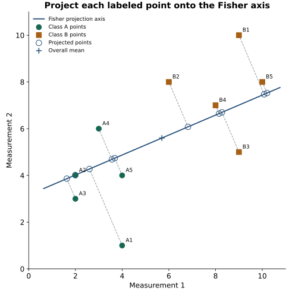

Fisher LDA: Find a Projection That Separates Classes
Expanded from PCA and LDA.pdf · View a handwritten page
PCA keeps the direction with the most overall spread. This guide builds Fisher's LDA direction from scratch using ten labeled points. LDA uses the labels to separate the classes while keeping points within each class close together; all the terms and calculations are explained here.
Start with the labeled points in the notes
Each point belongs to class A or B. LDA uses those labels while it chooses a direction. Here are the ten points listed on page 4 of the original notes:
| Row | Class | $x_1$ | $x_2$ |
|---|---|---|---|
| A1 | A | 4 | 1 |
| A2 | A | 2 | 4 |
| A3 | A | 2 | 3 |
| A4 | A | 3 | 6 |
| A5 | A | 4 | 4 |
| B1 | B | 9 | 10 |
| B2 | B | 6 | 8 |
| B3 | B | 9 | 5 |
| B4 | B | 8 | 7 |
| B5 | B | 10 | 8 |
Average the measurements within each class. For A, the averages are $\mu_A=((4+2+2+3+4)/5,(1+4+3+6+4)/5)=(3,3.6)$. Doing the same for B gives $\mu_B=(8.4,7.6)$. The centers differ by $(5.4,4)$. A line along that gap would put the averages far apart, but it might also spread points from the same class far apart. LDA accounts for both.

Build the within-class scatter matrices
For a point $x_i$ in class $c$, subtract that class's mean $\mu_c$ to get its residual: $r_i=x_i-\mu_c$. The residual tells us how far the point is from its own class center. Using each point's own class mean is important: otherwise, the gap between classes would be counted as within-class spread.
With two measurements, write a residual as the column vector $r_i=(r_{i1},r_{i2})^\top$. Multiply it by its row version to get that point's contribution to the scatter matrix:
The diagonal stores each squared difference. The off-diagonal stores the product of the two differences: it is positive when they have the same sign and negative when they have opposite signs. For A1, $\mu_A=(3,3.6)$ and $x_{A1}=(4,1)$, so $r_{A1}=(1,-2.6)$ and:
Repeat this for each class A point. The table lists the residual and the three distinct entries in its matrix contribution:
| Point | Residual $(r_1,r_2)$ | $r_1^2$ | $r_1r_2$ | $r_2^2$ |
|---|---|---|---|---|
| A1 | (1, −2.6) | 1 | −2.6 | 6.76 |
| A2 | (−1, 0.4) | 1 | −0.4 | 0.16 |
| A3 | (−1, −0.6) | 1 | 0.6 | 0.36 |
| A4 | (0, 2.4) | 0 | 0 | 5.76 |
| A5 | (1, 0.4) | 1 | 0.4 | 0.16 |
Summing the three numeric columns gives $4$, $-2$, and $13.2$. Put those sums on the diagonal and in both off-diagonal positions to get class A's scatter matrix:
Now repeat the same steps using class B's mean, $\mu_B=(8.4,7.6)$:
| Point | Residual $(r_1,r_2)$ | $r_1^2$ | $r_1r_2$ | $r_2^2$ |
|---|---|---|---|---|
| B1 | (0.6, 2.4) | 0.36 | 1.44 | 5.76 |
| B2 | (−2.4, 0.4) | 5.76 | −0.96 | 0.16 |
| B3 | (0.6, −2.6) | 0.36 | −1.56 | 6.76 |
| B4 | (−0.4, −0.6) | 0.16 | 0.24 | 0.36 |
| B5 | (1.6, 0.4) | 2.56 | 0.64 | 0.16 |
These columns sum to $9.2$, $-0.2$, and $13.2$, giving class B's scatter matrix:
$S_A$ measures spread inside A; $S_B$ measures spread inside B. Add them to get the total within-class scatter, $S_W$:
The diagonal of $S_W$ adds squared differences for each measurement across both classes. The off-diagonal adds how the two measurements vary together. This is a raw sum, not an average covariance: dividing the whole matrix by one common number would not change the best direction, but dividing each class by a different number would change its influence.
Derive Fisher's separation score
Choose a direction $w$ and turn each point into one score, $z_i=w^\top x_i$. The average score for class $c$ is $\bar z_c=w^\top\mu_c$. If $d=\mu_B-\mu_A$ is the gap between the class means, then the gap between their scores is:
For point $i$, let $y_i$ be its class label. Its score's difference from its own class average is $z_i-\bar z_{y_i}=w^\top(x_i-\mu_{y_i})=w^\top r_i$. Square these differences and add them:
So Fisher's criterion is the squared gap between class averages divided by their total within-class spread:
A large numerator means the projected class averages are far apart; a small denominator means points stay close to their own class averages. Multiplying $w$ by any constant leaves the ratio unchanged, so only the direction matters.
For this example, $S_W$ is invertible. Because the ratio does not change when we rescale $w$, impose $w^\top S_Ww=1$. We can choose the sign of $w$ so $w^\top d$ is positive; then maximizing $J(w)$ is the same as maximizing $w^\top d$. Use a Lagrange multiplier $\lambda$ for the constraint:
This is why we solve a system involving $S_W$ rather than just point the line from one mean to the other. Substituting this example's $S_W$ and $d=(5.4,4)$ gives:
The solution is approximately $(0.44046,0.18822)$. Dividing by its length gives the unit direction $v=(0.91956,0.39295)$. A point's score is now one number: $z=v^\top x=0.91956x_1+0.39295x_2$. For A1, the score is about $0.91956(4)+0.39295(1)=4.0712$.
On this line, class A's average score is about 4.1733 and class B's is about 10.7107. The direction separates the averages while accounting for how widely points spread within each class.
Plotting all ten scores makes that separation easier to see:

import numpy as np
A = np.array([[4,1], [2,4], [2,3], [3,6], [4,4]], dtype=float)
B = np.array([[9,10], [6,8], [9,5], [8,7], [10,8]], dtype=float)
ma, mb = A.mean(0), B.mean(0)
Ac, Bc = A-ma, B-mb
scatter_a = Ac.T @ Ac
scatter_b = Bc.T @ Bc
within = scatter_a + scatter_b
w = np.linalg.solve(within, mb-ma)
v = w / np.linalg.norm(w)
print(scatter_a) # [[4, -2], [-2, 13.2]]
print(scatter_b) # [[9.2, -0.2], [-0.2, 13.2]]
print(within) # [[13.2, -2.2], [-2.2, 26.4]]
print(v) # [0.91955932, 0.39295122]Generalize the same idea to several classes
For more than two classes, keep the same two ideas: add up spread within each class, and measure how far each class average is from the overall average. Let $n_c$ be the number of points in class $c$, $\mu_c$ its mean, and $\mu$ the overall mean, weighted by class sizes:
The class counts make larger classes count more in the between-class measure. The equation $S_{\mathrm{between}}v=\lambda S_Wv$ finds directions with large separation between class means and small spread within classes. Keep the directions with the largest $\lambda$. With $C$ classes and $d$ measurements, there can be at most $\min(d,C-1)$ such directions. Two classes therefore give at most one.
What this projection does and does not give us
Fisher's calculation uses class means and spread; it does not require the data to follow Gaussian distributions. It can miss a pattern when two classes have the same average or form curved shapes. If the within-class scatter matrix cannot be inverted, regularization can make the calculation more stable.
Fit any preprocessing and the projection using training data, then reuse them for new points. This gives each point a score, but not a class label; a classifier needs an extra rule to make that choice. The next guide shows LDA as a Gaussian classifier, with class priors, a decision boundary, and a worked prediction.
From the handwritten notes
This guide expands the relevant material in PCA and LDA.pdf. The complete original contains both topics; the blog treats PCA, LDA projection, and LDA classification separately.
View original page 3

Further reading: